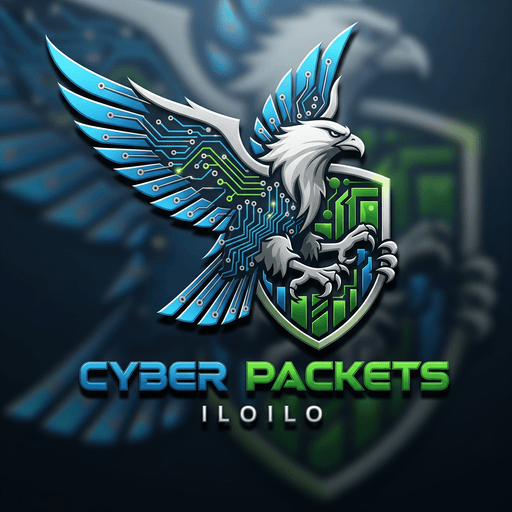

Small and medium businesses
Shops, clinics, offices, service companies, and growing teams that depend on computers, internet, and files every day.

Cyber Packets 0999 886 4485Managed IT Support for Iloilo SMBs
We act as your dedicated IT team - monitoring, fixing, and protecting your systems so your business runs without interruption.
Serving businesses across Iloilo City - local support you can call anytime.
Who we help
Shops, clinics, offices, service companies, and growing teams that depend on computers, internet, and files every day.
You get clear recommendations, simple explanations, and honest expectations without confusing technical language.
We focus on prevention, fast response, and practical protection so your staff can stay productive.
What we manage
Most businesses call IT only after something breaks. Cyber Packets uses monitoring, alerts, maintenance, and guided support to reduce risk early.
System health checks, issue alerts, antivirus monitoring, and maintenance for daily reliability.
Common problems are handled online during business hours, helping your team get back to work faster.
Daily cloud backup monitoring is available on Standard, with assisted file recovery support on Premium.
Premium adds advanced endpoint protection, ransomware protection, policy controls, and patch management.
Managed IT plans
Start lean, then upgrade as your team, systems, and risk grow.
Micro
PHP 3,500 / month
Best for 1-5 users taking their first step into managed IT.
Up to 2 devices included24H best-effort response
Basic
PHP 5,500 / month
Best for 3-5 users who rely on computers every day.
Up to 3 devices included8 business-hour response
Standard
PHP 7,500 / month
Best for 5-8 users where data and uptime are critical.
Up to 5 devices included4 business-hour response
Premium
PHP 11,500 / month
Best for mission-critical operations that cannot afford delays.
Up to 8 devices included1-2 business-hour response
Enhance Your IT Protection
Six services. One trusted IT partner for your business.
Clear, simple add-ons you can understand — no confusing tech, just practical protection for your business.
PHP 1,500 / device / month
Daily automatic backups for business-critical files with secure cloud storage and recovery support.
Storage usage is monitored.
Additional storage costs may apply if usage exceeds normal business needs.
PHP 1,500 / visit up to 2 hours
On-site support is not included in standard plans and is billed separately when required. This applies to all services that require physical inspection, hardware access, or on-site recovery.
Each visit covers up to 2 hours. Additional time or unrelated issues may require a separate session or booking.
Network & WiFi Optimization is handled as a separate one-time service.
PHP 5,000-10,000 one-time
Improve internet stability, WiFi coverage, and router security so your team stays connected.
PHP 2,000 / month
We coordinate, follow up, and escalate internet provider issues so you do not have to chase support tickets.
PHP 4,000 / month for up to 2 devices
Full system image backup with weekly schedule using client-provided external storage.
Recovery requires on-site support and is billed separately.
Service is provided on a best-effort basis depending on backup integrity and hardware condition.
PHP 450 / user / month
Secure password vault setup with encrypted storage and team sharing. Includes onboarding. Ongoing management is subject to fair usage limits.
Premium Add-On
Recovery is performed on a best-effort basis. Success depends on backup integrity, system condition, internet connectivity, and third-party provider performance. Cyber Packets does not guarantee full restoration in all scenarios.
per device / month
per enrolled device
per month
per visit up to 2 hours
Recovery is best-effort and depends on backup integrity, system condition, connectivity, and third-party provider availability.
Quick comparison
How it works
We learn your current setup, pain points, number of users, and business priorities.
We check devices, internet, network, backups, security posture, and support risks.
You get a clear plan matched to your team size, downtime risk, and budget.
We monitor, maintain, respond, and guide improvements as your business grows.
Before you decide
All plans are remote-first. On-site support is a paid add-on for Micro, Basic, and Standard. Premium includes one on-site visit per month up to 2 hours.
SLA targets define response objectives during business hours. Complex issues, third-party providers, or client-side delays may affect timelines.
No provider can guarantee 100% prevention. The goal is to reduce risk, improve protection, respond faster, and make your business more resilient.
Micro or Basic fits smaller teams. Standard is recommended when business files and network reliability matter. Premium is best when downtime directly affects revenue.
Ready to get protected?
Talk to a local Iloilo IT support team that explains options clearly and helps you choose the right plan.